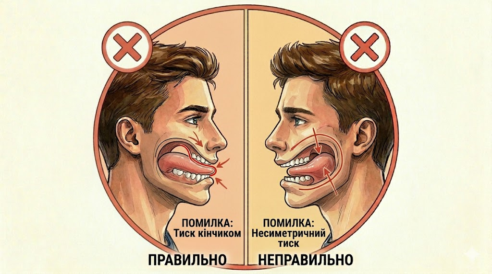

01

Крок 1
Притисніть язик до піднебіння
Притисніть усю поверхню язика (не лише кінчик) до твердого піднебіння за верхніми зубами, не торкаючись самих зубів. Губи зімкнуті без напруги, дихання — через ніс.
Часта помилка
Тиснути лише кінчиком язика в передні зуби — це може зсунути різці, а не сформувати правильну позицію.
Лайфхак
Зробіть ковток слини — у момент ковтка язик сам піднімається у правильну позицію. Запам’ятайте це відчуття.